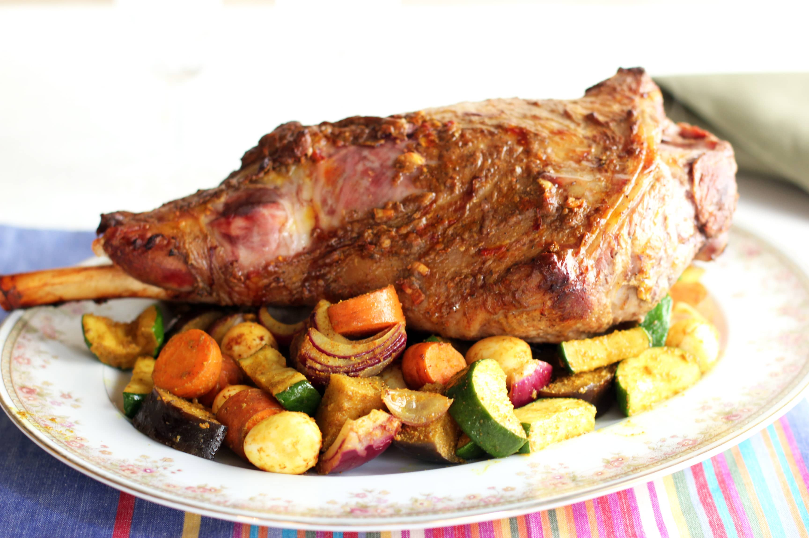
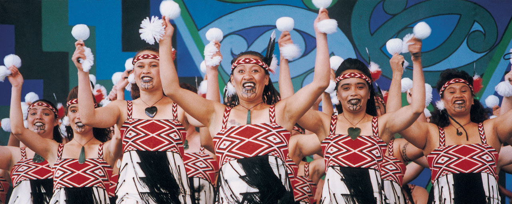
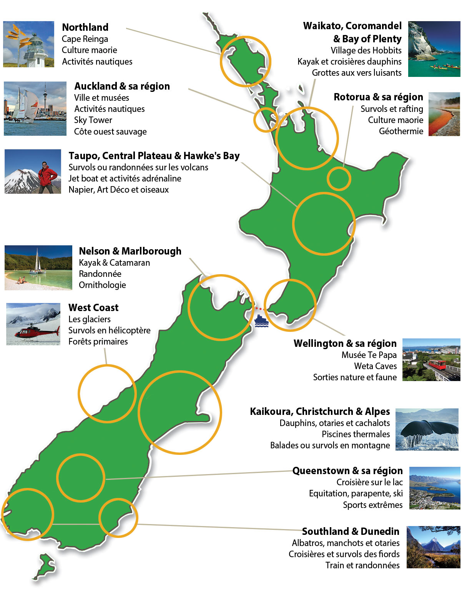
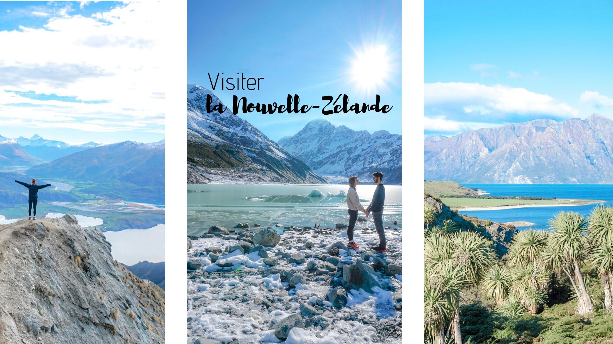

Nouvelle-Zélande
Bienvenue en Nouvelle-Zélande, un pays de paysages à couper le souffle et d'aventures inoubliables.
Découverte de la nature
Explorez les fjords majestueux de Milford Sound, randonnez dans les parcs nationaux tels que Tongariro et Abel Tasman, et admirez les plages dorées de la péninsule de Coromandel.
Culture maorie
Plongez dans la riche culture maorie en visitant des villages traditionnels, en assistant à des spectacles de haka et en découvrant l'art et les légendes ancestrales.
Aventures en plein air
Pour les amateurs de sensations fortes, la Nouvelle-Zélande offre une multitude d'activités palpitantes telles que le saut à l'élastique, le rafting en eaux vives, le parapente et la plongée sous-marine.
Gastronomie locale
Dégustez la cuisine néo-zélandaise, célèbre pour ses fruits de mer frais, son agneau tendre et ses vins de classe mondiale. Ne manquez pas de goûter au fameux "Hangi", un repas traditionnel cuit sous terre.
Informations pratiques
La Nouvelle-Zélande est un pays sûr et accueillant. Assurez-vous de respecter l'environnement naturel et les coutumes locales. Le climat varie selon les régions, alors préparez-vous en conséquence.
Conclusion
Que vous soyez un amoureux de la nature, un passionné d'aventure ou un curieux de culture, la Nouvelle-Zélande a quelque chose à offrir à chacun. Préparez-vous à vivre une expérience inoubliable dans ce pays aux mille merveilles.
Gastronomie locale
La Nouvelle-Zélande est réputée pour sa cuisine délicieuse et variée. Les fruits de mer frais, l'agneau tendre et les vins de renommée mondiale sont quelques-unes des spécialités à ne pas manquer. Ne manquez pas de goûter au "Hangi", un repas traditionnel cuit sous terre, qui offre une expérience culinaire unique et savoureuse.
Milford Sound
Milford Sound est l'un des fjords les plus célèbres de Nouvelle-Zélande, connu pour ses paysages à couper le souffle, ses cascades majestueuses et sa faune diversifiée. Une croisière sur le fjord est un incontournable pour découvrir cette merveille naturelle.

Culture Maori
La culture maorie est un élément essentiel de l'identité néo-zélandaise. Les Maoris, les habitants autochtones de la Nouvelle-Zélande, ont une riche tradition artistique, musicale et spirituelle. Ne manquez pas de découvrir les spectacles de haka, les danses traditionnelles et l'art du tatouage maori lors de votre visite.
Activités
Découvrez les nombreuses activités passionnantes que la Nouvelle-Zélande a à offrir, des randonnées dans les paysages époustouflants aux aventures en plein air comme le saut à l'élastique et le rafting. Les amateurs de culture peuvent explorer les sites maoris et les galeries d'art, tandis que les gourmets apprécieront les festivals culinaires et les dégustations de vin.
Informations pratiques
Avant de partir en Nouvelle-Zélande, assurez-vous de vérifier les exigences en matière de visa et de passeport. Le pays utilise le dollar néo-zélandais (NZD) comme monnaie. La langue officielle est l'anglais, mais le maori est également reconnu. Le climat varie selon les régions, alors préparez- vous en conséquence. La Nouvelle-Zélande est un pays sûr et accueillant, mais il est toujours conseillé de prendre des précautions de base pour assurer votre sécurité.
Revenus et bien-être
La Nouvelle-Zélande est reconnue pour son haut niveau de vie et son système de santé de qualité. Le pays offre un équilibre entre vie professionnelle et vie personnelle, avec de nombreuses opportunités pour les loisirs et les activités en plein air. Le coût de la vie peut être élevé dans certaines régions, mais les salaires sont généralement compétitifs. Les expatriés apprécient la qualité de vie, la sécurité et l'environnement naturel préservé.
| Catégorie | Détails |
|---|---|
| Revenu moyen | Environ 60 000 NZD par an |
| Coût de la vie | Élevé dans les grandes villes, modéré dans les régions rurales |
| Système de santé | Public et privé, de haute qualité |
| Équilibre travail-vie personnelle | Fortement valorisé, avec de nombreuses activités de plein air |